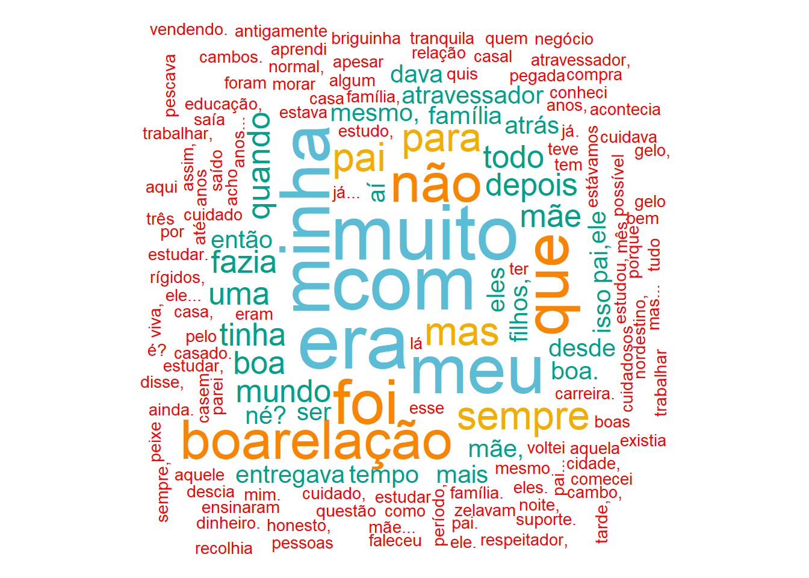

Será Criado uma base de dados contendo as respostas das entrevistas semiestruturadas, aplicados a uma amostra de 15 participantes, localizados na cidade de Altamira, Estado do Pará, em 2024.
Sendo criado um corpus de texto para a Pergunta 1.
Code
library(stringr)library(dplyr)# Corpus de Texto - PERGUNTA 1Texto_P1<-c("Meu Pai era nordestino PaiNasceuCeará e começou a trabalhar na zona rural, naquela época era muito fraco e não conseguia sustentar a família totalmente da agricultura. Então ele teve que procurar outra atividade, porque ele já tinha conhecimento da Olaria lá do Nordeste. Aí ele começou ali na beira do rio, ali, onde é a praia do Leonardo sim. Depois passou para o outro lado onde era o Igarapé Ambé e em seguida para a Olaria dos padres, chamava Olaria dos Padres, né? Uma Olaria que era meio que administrada pela Prelazia do Xingu, que era responsável por organizar as divisões das Olarias, né? Meu pai trabalhou lá e depois de lá foi para a Olaria do Igarapé Panelas. Teve um período ali de meus. 16 anos, 17 anos até os quase uns 30, eu fiquei afastado de Olaria. Fui para o Exército. -","Meu nome é Rita... Eu sou filha de Maria Estela Sabina de Moura, Francisco Ricardo, Roda de Moura, nós não somos daqui, nós somos do Ceará. Nós viemos para cá... eu acho que eu tinha nove anos de idade quando a gente veio para cá morar em Altamira. -","Tá, o Pai do meu Pai é do estado do meu Bizavô era do Pará, meu Pai que é oleiro e nós trabalhamos na alaria dele, desde pequenininho com ele. O nome do meu pai, o vô, ele veio de Belém, parece. Só que eles já tinham vindo do NasceuMaranhão, parece, a família dele. A da minha avó não, a daqui mesmo. Só que eles são da região ali do Senador José Porfírio. Onde conheço por Beiradão. Eles moravam ali naquelas na beira do Rio Xingu de lá. Aí meu pai veio pra rua. Quando ele veio pra rua, ele trabalhou ali na Santa Clara um tempo. E depois ele trabalhou só com a Maria. Sério? -","O meu avô materno era do AvoNasceuCeara. Minha mãe também é do MaeNasceuCeara. E o meu avô paterno era do AvoNasceuMaranhao. E o meu pai é do PaiNasceuPará. -","Meu Avô, Avó, Pai, Mãe, todos foram criados aqui na região do Xingu. Xingu, Iriri, Riozinho do Anfrizo, Maitá. Eles eram cortador de seringa, meu vô, cortador de castanha, quebrador de castanha, tirador de calço. Era Sernambique, chamava naquela época. Naquela época da onça pintada também, eles viviam de tirar pele, gato maracajá. Então eu venho de uma família muito antiga de... de roça, de beiradão de rio. E aí como eu vejo meu avô, minha mãe, meu pai e se criamos no beiradão do rio Nesse tempo eles tinham roça. E aí eu me dediquei a essa questão da pesca. Na época era pesca e eu virei um grande pescador. Hoje eu tenho 41 anos. Toda a minha vida foi beiradão desse rio e vivendo da pesca. E hoje eu vejo aí a questão do treinamento chegar, acabar com o meu ganha-pão, meu modo de vida, que eu tinha praticamente acabou. Hoje tá mais de 80% da minha renda acabou com o Rio Xingu. Hoje eu tô vendo o que que eu vou fazer pra sobreviver de novo. -","Meu Pai era daqui, né? Eu nasci aqui, na região do Rio Xingu. Meu pai morava aqui no Arroz Cru. Mas depois, quando eu era pequeno, nós se mudamos para o Rio da Rica.","Meus pais não são naturais daqui. Minha mãe é de Goiás e meu pai é do Piauí. Eles casaram na abertura da Terra da Amazônia com a Altamira, ganharam as terras, eles eram agricultores. Inclusive minha mãe e meu pai aposentados. Minha mãe como agricultora e meu pai como trabalhava na Serra Pelada, é aposentado como mineiro, eu também trabalhei um tempo lá. -","Eu sou de natural de Santarém. Nós sempre moramos no beiradão do Rio Curuaúna lá em Santarém, né? Aí meu pai mora aqui agora, mas moramos sempre lá, mora em mais de 20 anos, desde quando de criancinha né? Nasci e me criei lá. Aí tem uns 10 anos que eu já estou aqui aí. Nós pescávamos lá também vendia aí. Agora nós viemos para cá, eu casei, né? Aí ele também é pescador, tem mais de 30 anos que ele pesca e eu estou. Vou acompanhando. Ele tem mais de 4 anos agora acompanhando ele. Minha Mãe é Nazaré Tavares Soares, meu pai, José Willian Macedo rocha. -","Meu PaiNasceuBelem e minha MaeNasceuBelem não são daqui, são de Belém. Eu nasci no 20 de NasceuVitóriaXingu. -","Não, Pai, eu não conheci meu pai não, só minha Mãe. A minha MaeNasceuAltamira é moradora de Altamira, ainda é viva ainda, Maria das Graças Cardoso da Luz, tem hoje 87 anos e mora aqui em Altamira. Apesar que nem no meu documento não tem pai, só a registro de mãe. -","Meus Pais são daqui mesmo de Altamira, minha Mãe, ia trabalhando e ficava com ela de noite, era a minha mãe. Aí depois ela arrumou um emprego e trabalhou nos padres. Passou oito anos trabalhando nos padres. O nome da minha mãe era Antônia e meu pai era Donato Rodrigues da Costa, minha mãe ainda é viva, meu pai já se foi. -","Meus Pais saíram da aldeia, que são de São Mundinhos, né? Saíram da aldeia e fomos para o Rio Curuá, lá na localidade do Besouro. Aí de lá eu vim para cá com a idade, eu acho que uns cinco anos, por aí assim. Aí meu pai, desde lá para cá, nós toda vida moremos na beira do rio, na margem do rio, né? Aí ele tinha uma... nós morávamos nas ilhas, depois tiramos um lote aqui no Cotovelo, e aí nós tivemos até o momento que vinha esse empreendimento da barragem Belo Monte pra poder tirar nós, né? -","Rapaz, meu PaiNasceuAltamira é daqui mesmo, da região de Altamira, minha MaeNasceuAltamira também é daqui de Altamira, nascida e criado aqui mesmo em Altamira. E o que eu vou falar é que eles são pescadores ribeirinhos. E nós mexemos com peixe, meu pai mexe com peixe, pescou muito o acari, peixe ornamental, e até agora ele mexe com com peixe mesmo, com pesca tucunaré, pescada. E nós vive do rio aí. Ribeirinho mesmo, nascido e criado aqui. -","Aí nós somos. É o chamado nativo, né? Nativo é meus Pais meus, da avó nasceu e se criou. É, não digo nem em Altamira, né? Mas na beirada do Rio Xingu, no Rio Iriri. A profissão foi passando de geração em geração, de pai para filho, aí até hoje, graças a Deus a gente guardava a tradição. -","Somos todos nativos daqui, PaiNasceuAltamira, MaeNasceuAltamira, somos do beiradão, nativos da região -")
Sendo criado um corpus de texto para a Pergunta 2.
Code
library(stringr)library(dplyr)# Corpus de Texto - PERGUNTA 2Texto_P2<-c("Não, meu Pai, minha Mãe, Eram Analfabetos meu Pai até uma certa idade, ele fez aquele antigo Mobral só que depois, quando ele teve que tirar uma outra documentação, ele já não assinava mais. -","O meu Pai... acho que ele SemFormação. e ele trabalhava de pedreiro... tudo que aparecia ele trabalhava... Não tem, SemFormação? E a Mãe também... acho que ela não teve também SemFormação... mas a minha Mãe gostava muito de costurar... e dona de casa também. -","O meu Pai, ele fez até a terceira série. A minha Mãe, no tempo que a gente trabalhava ali, ela começou a estudar de novo e ela se formou depois disso. Então, hoje ela é professora também. -","O meu Pai, ele trabalhava na Roça e só estudou até a terceira série. Aí minha Mãe, ela começou, trabalhava de Lavadeira de Roupa, Diarista. Aí agora ela concluiu a faculdade e é Professora. Meu Pai... Olha, eu não lembro quanto tempo não, porque ele já trabalhava antes de eu nascer. Foi bastante tempo. -","Pescador. Meu Pai e minha Mãe foram Pescador a vida inteira, SemFormação - ","SemFormação. -","SemFormação. -","SemFormação. -","SemFormação. -","Minha mãe Não Teve estudo e Trabalhava com Lavoura branca, SemFormação. -","SemFormação. -","SemFormação. -","SemFormação. -","Nenhuma, nunca estudaram. Sempre trabalhava com Pesca ou trabalhava com Agricultura alguma coisa, SemFormação. -","SemFormação. -")
Sendo criado um corpus de texto para a Pergunta 3.
Code
library(stringr)library(dplyr)Texto_P3<-c("Pai e minha mãe, acho que questão de família mesmo, desde nordestino, eles eram muito rígidos, mas muito cuidadosos ao mesmo tempo com os filhos, né? Então sempre zelavam pelo cuidado com os filhos, minha família não estudou, porque não quis estudar. Eu parei um período, depois voltei a estudar depois que tinha saído de casa e que estava casado. Mas quando estávamos em casa, meu pai sempre teve esse cuidado, todo mundo fazia o possível para todo mundo estudar, para todo mundo ter algum estudo, uma carreira. E muito família, meu pai sempre foi muito família. -","Era muito boa a minha relação com a minha mãe e com o meu pai... mais com o meu pai. Eu era mais pegada com ele... do que com a minha mãe... mas foi boa. Apesar de eu morar com eles até 12 anos... 12 anos eu já... Casem já. - ","Era tranquila - ","Normal, tinha aquela briguinha assim, mas... - ","Muito boa. Meu pai faleceu tem três anos, minha mãe é viva, mas foram um casal de pessoas muito boas e me ensinaram uma boa educação, foi trabalhar, ser honesto, ser respeitador, então aprendi tudo isso por eles. -","Era boarelação -","Foi boarelação -","Era boarelação -","Era uma boarelação -","Como eu disse, não conheci pai, minha mãe foi o meu suporte. -","Era minha mãe, depois quando comecei a trabalhar com meu pai, ele quem cuidava de mim. -","Sempre foi muito boa -","Foi boarelação -","Antigamente não tinha o negócio do gelo, era o peixe no cambo, não é? Pescava à noite, aí descia aqui para a cidade, fazia os cambos. Dava que entregava o meu atravessador, e o atravessador saía vendendo. Aí quando dava de tarde, o atravessador recolhia aquele dinheiro. Entregava para ele. Ele fazia compra do mês. Isso acontecia desde sempre, lá atrás praticamente, bem atrás mesmo, né? Que é o tempo que não existia o gelo ainda. -","Era muito boarelação -")
Será feito o pré-processamento dos textos, aplicando o pacote tm, para fazer a limpeza do texto, removendo as pontuações, os números, espaços em branco, etc.
Fase esta de preparação das palavras para fazer a visualização dos discurssos.
Code
library(tm)# Pre-Processar os Textoscorpus1<-tm::tm_map(corpus1, content_transformer(tolower))# Transformar para Minusculacorpus1<-tm::tm_map(corpus1, removePunctuation)# Remover Pontuaçãocorpus1<-tm::tm_map(corpus1, removeNumbers)# Remover Númeroscorpus1<-tm::tm_map(corpus1, removeWords, stopwords("portuguese"))# Remover Stopwords (Palavras Comuns)corpus1<-tm::tm_map(corpus1, stripWhitespace)# Remover Espaços em Branco
A visualização gráfica dos relatos são resumidas por meio do gráfico chamado nuvem de palavras.
3.2 Nuvem de Palavras
Code
library(wordcloud)library(wesanderson)nuvem1<-wordcloud(words =corpus1, min.freq =1, # Frequência mínima de palavras a serem exibidas max.words =500, # Número máximo de palavras a serem exibidas random.order =FALSE, # Não embaralhar as palavras rot.per =0.25, # Proporção de palavras Rotacionadas color =wes_palette("Darjeeling1"))
Figure 3.1: Nuvem de Palavras Pergunta 1
Code
library(wordcloud)library(wesanderson)nuvem1<-wordcloud(words =corpus2, min.freq =1, # Frequência mínima de palavras a serem exibidas max.words =500, # Número máximo de palavras a serem exibidas random.order =FALSE, # Não embaralhar as palavras rot.per =0.25, # Proporção de palavras Rotacionadas color =wes_palette("Darjeeling1"))
Figure 3.2: Nuvem de Palavras Pergunta 2
Code
library(wordcloud)library(wesanderson)nuvem1<-wordcloud(words =corpus3, min.freq =1, # Frequência mínima de palavras a serem exibidas max.words =500, # Número máximo de palavras a serem exibidas random.order =FALSE, # Não embaralhar as palavras rot.per =0.25, # Proporção de palavras Rotacionadas color =wes_palette("Darjeeling1"))

Figure 3.3: Nuvem de Palavras Pergunta 3
Source Code
```{=html}<style>body{text-align: justify}</style>```::: progress::: {.progress-bar style="width: 100%;"}::::::# Análise Qualitativa## Data Set: Corpus de TextoSerá Criado uma base de dados contendo as respostas das entrevistas semiestruturadas, aplicados a uma amostra de 15 participantes, localizados na cidade de Altamira, Estado do Pará, em 2024.Sendo criado um corpus de texto para a Pergunta 1.```{r corpus1, message=FALSE, warning=FALSE}library(stringr)library(dplyr)# Corpus de Texto - PERGUNTA 1Texto_P1 <- c("Meu Pai era nordestino PaiNasceuCeará e começou a trabalhar na zona rural, naquela época era muito fraco e não conseguia sustentar a família totalmente da agricultura. Então ele teve que procurar outra atividade, porque ele já tinha conhecimento da Olaria lá do Nordeste. Aí ele começou ali na beira do rio, ali, onde é a praia do Leonardo sim. Depois passou para o outro lado onde era o Igarapé Ambé e em seguida para a Olaria dos padres, chamava Olaria dos Padres, né? Uma Olaria que era meio que administrada pela Prelazia do Xingu, que era responsável por organizar as divisões das Olarias, né? Meu pai trabalhou lá e depois de lá foi para a Olaria do Igarapé Panelas. Teve um período ali de meus. 16 anos, 17 anos até os quase uns 30, eu fiquei afastado de Olaria. Fui para o Exército. -", "Meu nome é Rita... Eu sou filha de Maria Estela Sabina de Moura, Francisco Ricardo, Roda de Moura, nós não somos daqui, nós somos do Ceará. Nós viemos para cá... eu acho que eu tinha nove anos de idade quando a gente veio para cá morar em Altamira. -", "Tá, o Pai do meu Pai é do estado do meu Bizavô era do Pará, meu Pai que é oleiro e nós trabalhamos na alaria dele, desde pequenininho com ele. O nome do meu pai, o vô, ele veio de Belém, parece. Só que eles já tinham vindo do NasceuMaranhão, parece, a família dele. A da minha avó não, a daqui mesmo. Só que eles são da região ali do Senador José Porfírio. Onde conheço por Beiradão. Eles moravam ali naquelas na beira do Rio Xingu de lá. Aí meu pai veio pra rua. Quando ele veio pra rua, ele trabalhou ali na Santa Clara um tempo. E depois ele trabalhou só com a Maria. Sério? -", "O meu avô materno era do AvoNasceuCeara. Minha mãe também é do MaeNasceuCeara. E o meu avô paterno era do AvoNasceuMaranhao. E o meu pai é do PaiNasceuPará. -", "Meu Avô, Avó, Pai, Mãe, todos foram criados aqui na região do Xingu. Xingu, Iriri, Riozinho do Anfrizo, Maitá. Eles eram cortador de seringa, meu vô, cortador de castanha, quebrador de castanha, tirador de calço. Era Sernambique, chamava naquela época. Naquela época da onça pintada também, eles viviam de tirar pele, gato maracajá. Então eu venho de uma família muito antiga de... de roça, de beiradão de rio. E aí como eu vejo meu avô, minha mãe, meu pai e se criamos no beiradão do rio Nesse tempo eles tinham roça. E aí eu me dediquei a essa questão da pesca. Na época era pesca e eu virei um grande pescador. Hoje eu tenho 41 anos. Toda a minha vida foi beiradão desse rio e vivendo da pesca. E hoje eu vejo aí a questão do treinamento chegar, acabar com o meu ganha-pão, meu modo de vida, que eu tinha praticamente acabou. Hoje tá mais de 80% da minha renda acabou com o Rio Xingu. Hoje eu tô vendo o que que eu vou fazer pra sobreviver de novo. -", "Meu Pai era daqui, né? Eu nasci aqui, na região do Rio Xingu. Meu pai morava aqui no Arroz Cru. Mas depois, quando eu era pequeno, nós se mudamos para o Rio da Rica.", "Meus pais não são naturais daqui. Minha mãe é de Goiás e meu pai é do Piauí. Eles casaram na abertura da Terra da Amazônia com a Altamira, ganharam as terras, eles eram agricultores. Inclusive minha mãe e meu pai aposentados. Minha mãe como agricultora e meu pai como trabalhava na Serra Pelada, é aposentado como mineiro, eu também trabalhei um tempo lá. -", "Eu sou de natural de Santarém. Nós sempre moramos no beiradão do Rio Curuaúna lá em Santarém, né? Aí meu pai mora aqui agora, mas moramos sempre lá, mora em mais de 20 anos, desde quando de criancinha né? Nasci e me criei lá. Aí tem uns 10 anos que eu já estou aqui aí. Nós pescávamos lá também vendia aí. Agora nós viemos para cá, eu casei, né? Aí ele também é pescador, tem mais de 30 anos que ele pesca e eu estou. Vou acompanhando. Ele tem mais de 4 anos agora acompanhando ele. Minha Mãe é Nazaré Tavares Soares, meu pai, José Willian Macedo rocha. -", "Meu PaiNasceuBelem e minha MaeNasceuBelem não são daqui, são de Belém. Eu nasci no 20 de NasceuVitóriaXingu. -", "Não, Pai, eu não conheci meu pai não, só minha Mãe. A minha MaeNasceuAltamira é moradora de Altamira, ainda é viva ainda, Maria das Graças Cardoso da Luz, tem hoje 87 anos e mora aqui em Altamira. Apesar que nem no meu documento não tem pai, só a registro de mãe. -", "Meus Pais são daqui mesmo de Altamira, minha Mãe, ia trabalhando e ficava com ela de noite, era a minha mãe. Aí depois ela arrumou um emprego e trabalhou nos padres. Passou oito anos trabalhando nos padres. O nome da minha mãe era Antônia e meu pai era Donato Rodrigues da Costa, minha mãe ainda é viva, meu pai já se foi. -", "Meus Pais saíram da aldeia, que são de São Mundinhos, né? Saíram da aldeia e fomos para o Rio Curuá, lá na localidade do Besouro. Aí de lá eu vim para cá com a idade, eu acho que uns cinco anos, por aí assim. Aí meu pai, desde lá para cá, nós toda vida moremos na beira do rio, na margem do rio, né? Aí ele tinha uma... nós morávamos nas ilhas, depois tiramos um lote aqui no Cotovelo, e aí nós tivemos até o momento que vinha esse empreendimento da barragem Belo Monte pra poder tirar nós, né? -", "Rapaz, meu PaiNasceuAltamira é daqui mesmo, da região de Altamira, minha MaeNasceuAltamira também é daqui de Altamira, nascida e criado aqui mesmo em Altamira. E o que eu vou falar é que eles são pescadores ribeirinhos. E nós mexemos com peixe, meu pai mexe com peixe, pescou muito o acari, peixe ornamental, e até agora ele mexe com com peixe mesmo, com pesca tucunaré, pescada. E nós vive do rio aí. Ribeirinho mesmo, nascido e criado aqui. -", "Aí nós somos. É o chamado nativo, né? Nativo é meus Pais meus, da avó nasceu e se criou. É, não digo nem em Altamira, né? Mas na beirada do Rio Xingu, no Rio Iriri. A profissão foi passando de geração em geração, de pai para filho, aí até hoje, graças a Deus a gente guardava a tradição. -", "Somos todos nativos daqui, PaiNasceuAltamira, MaeNasceuAltamira, somos do beiradão, nativos da região -" )```Sendo criado um corpus de texto para a Pergunta 2.```{r corpus2, message=FALSE, warning=FALSE}library(stringr)library(dplyr)# Corpus de Texto - PERGUNTA 2Texto_P2 <- c("Não, meu Pai, minha Mãe, Eram Analfabetos meu Pai até uma certa idade, ele fez aquele antigo Mobral só que depois, quando ele teve que tirar uma outra documentação, ele já não assinava mais. -", "O meu Pai... acho que ele SemFormação. e ele trabalhava de pedreiro... tudo que aparecia ele trabalhava... Não tem, SemFormação? E a Mãe também... acho que ela não teve também SemFormação... mas a minha Mãe gostava muito de costurar... e dona de casa também. -", "O meu Pai, ele fez até a terceira série. A minha Mãe, no tempo que a gente trabalhava ali, ela começou a estudar de novo e ela se formou depois disso. Então, hoje ela é professora também. -", "O meu Pai, ele trabalhava na Roça e só estudou até a terceira série. Aí minha Mãe, ela começou, trabalhava de Lavadeira de Roupa, Diarista. Aí agora ela concluiu a faculdade e é Professora. Meu Pai... Olha, eu não lembro quanto tempo não, porque ele já trabalhava antes de eu nascer. Foi bastante tempo. -", "Pescador. Meu Pai e minha Mãe foram Pescador a vida inteira, SemFormação - ", "SemFormação. -", "SemFormação. -", "SemFormação. -", "SemFormação. -", "Minha mãe Não Teve estudo e Trabalhava com Lavoura branca, SemFormação. -", "SemFormação. -", "SemFormação. -", "SemFormação. -", "Nenhuma, nunca estudaram. Sempre trabalhava com Pesca ou trabalhava com Agricultura alguma coisa, SemFormação. -", "SemFormação. -" )```Sendo criado um corpus de texto para a Pergunta 3.```{r corpus3, message=FALSE, warning=FALSE}library(stringr)library(dplyr)Texto_P3 <- c("Pai e minha mãe, acho que questão de família mesmo, desde nordestino, eles eram muito rígidos, mas muito cuidadosos ao mesmo tempo com os filhos, né? Então sempre zelavam pelo cuidado com os filhos, minha família não estudou, porque não quis estudar. Eu parei um período, depois voltei a estudar depois que tinha saído de casa e que estava casado. Mas quando estávamos em casa, meu pai sempre teve esse cuidado, todo mundo fazia o possível para todo mundo estudar, para todo mundo ter algum estudo, uma carreira. E muito família, meu pai sempre foi muito família. -", "Era muito boa a minha relação com a minha mãe e com o meu pai... mais com o meu pai. Eu era mais pegada com ele... do que com a minha mãe... mas foi boa. Apesar de eu morar com eles até 12 anos... 12 anos eu já... Casem já. - ", "Era tranquila - ", "Normal, tinha aquela briguinha assim, mas... - ", "Muito boa. Meu pai faleceu tem três anos, minha mãe é viva, mas foram um casal de pessoas muito boas e me ensinaram uma boa educação, foi trabalhar, ser honesto, ser respeitador, então aprendi tudo isso por eles. -", "Era boarelação -", "Foi boarelação -", "Era boarelação -", "Era uma boarelação -", "Como eu disse, não conheci pai, minha mãe foi o meu suporte. -", "Era minha mãe, depois quando comecei a trabalhar com meu pai, ele quem cuidava de mim. -", "Sempre foi muito boa -", "Foi boarelação -", "Antigamente não tinha o negócio do gelo, era o peixe no cambo, não é? Pescava à noite, aí descia aqui para a cidade, fazia os cambos. Dava que entregava o meu atravessador, e o atravessador saía vendendo. Aí quando dava de tarde, o atravessador recolhia aquele dinheiro. Entregava para ele. Ele fazia compra do mês. Isso acontecia desde sempre, lá atrás praticamente, bem atrás mesmo, né? Que é o tempo que não existia o gelo ainda. -", "Era muito boarelação -" )``````{r matriz1, message=FALSE, warning=FALSE}library(stringr)library(dplyr)library(tm)# Criar um corpus de Textocorpus1 <- Corpus(VectorSource(Texto_P1))corpus2 <- Corpus(VectorSource(Texto_P2))corpus3 <- Corpus(VectorSource(Texto_P3))```Será feito o pré-processamento dos textos, aplicando o pacote **tm**, para fazer a limpeza do texto, removendo as pontuações, os números, espaços em branco, etc. Fase esta de preparação das palavras para fazer a visualização dos discurssos.```{r processamento1, message=FALSE, warning=FALSE}library(tm)# Pre-Processar os Textoscorpus1 <- tm::tm_map(corpus1, content_transformer(tolower)) # Transformar para Minusculacorpus1 <- tm::tm_map(corpus1, removePunctuation) # Remover Pontuaçãocorpus1 <- tm::tm_map(corpus1, removeNumbers) # Remover Númeroscorpus1 <- tm::tm_map(corpus1, removeWords, stopwords("portuguese")) # Remover Stopwords (Palavras Comuns)corpus1 <- tm::tm_map(corpus1, stripWhitespace) # Remover Espaços em Branco```A visualização gráfica dos relatos são resumidas por meio do gráfico chamado nuvem de palavras.## Nuvem de Palavras```{r nuvem1, message=FALSE, warning=FALSE}#| label: fig-nuvempalavra1#| fig-cap: "Nuvem de Palavras Pergunta 1"library(wordcloud)library(wesanderson)nuvem1 <- wordcloud(words = corpus1, min.freq = 1, # Frequência mínima de palavras a serem exibidas max.words = 500, # Número máximo de palavras a serem exibidas random.order = FALSE, # Não embaralhar as palavras rot.per = 0.25, # Proporção de palavras Rotacionadas color = wes_palette("Darjeeling1"))``````{r nuvem2, message=FALSE, warning=FALSE}#| label: fig-nuvempalavra2#| fig-cap: "Nuvem de Palavras Pergunta 2"library(wordcloud)library(wesanderson)nuvem1 <- wordcloud(words = corpus2, min.freq = 1, # Frequência mínima de palavras a serem exibidas max.words = 500, # Número máximo de palavras a serem exibidas random.order = FALSE, # Não embaralhar as palavras rot.per = 0.25, # Proporção de palavras Rotacionadas color = wes_palette("Darjeeling1"))``````{r nuvem3, message=FALSE, warning=FALSE}#| label: fig-nuvempalavra3#| fig-cap: "Nuvem de Palavras Pergunta 3"library(wordcloud)library(wesanderson)nuvem1 <- wordcloud(words = corpus3, min.freq = 1, # Frequência mínima de palavras a serem exibidas max.words = 500, # Número máximo de palavras a serem exibidas random.order = FALSE, # Não embaralhar as palavras rot.per = 0.25, # Proporção de palavras Rotacionadas color = wes_palette("Darjeeling1"))```::: progress::: {.progress-bar style="width: 100%;"}::::::